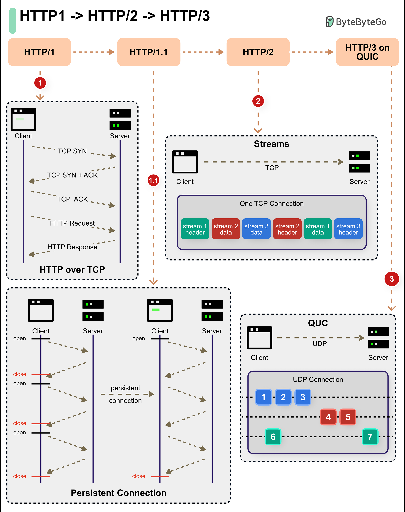

🔓 El protocol HTTP¶
1️⃣ Què és HTTP¶
HTTP (HyperText Transfer Protocol) és el protocol que permet la comunicació entre un client (com el navegador) i un servidor web. Defineix com s’envien les peticions i com es reben les respostes que contenen pàgines HTML, imatges, arxius o dades d’una API.
2️⃣ Model client-servidor¶
-
Client: demana un recurs (normalment un navegador o aplicació).
-
Servidor: Es un programari o equip que guarda i lliura els recursos solicitats pels clients. El servidor rep la petició, processa la informació i envia una resposta.
El client inicia sempre la comunicació, i el servidor espera les sol·licituds.
3️⃣ Ports utilitzats¶
HTTP→ port 80HTTPS(amb xifrat TLS) → port 443
4️⃣ Peticions i respostes HTTP¶
La comunicació es basa en un intercanvi de missatges:
- Petició (Request): El client envia una petició al servidor sol·licitant un recurs específic. La petició inclou informació com el mètode HTTP seleccionat (GET, POST, etc.), l’URL del recurs i les capçaleres HTTP necessàries.
- Resposta (Response): El servidor rep la petició i respon amb la informació sol·licitada, juntament amb un codi d’estat HTTP (Exemple:
200 OKo404 Not Found) i capçaleres addicionals. La resposta pot incloure dades en HTML, imatges, fitxers JSON, etc.
Exemple de petició¶
GET /index.html HTTP/1.1
Host: https://www.ieseljust.com
User-Agent: ElMeuNavegador/1.0
Accept: text/html
- GET és el mètode HTTP utilitzat per sol·licitar un recurs.
- /index.html és la ruta del recurs que s’està sol·licitant al servidor.
- HTTP/1.1 indica la versió del protocol HTTP que s’està fent servir.
- Host: www.ieseljust.com especifica el nom del host a qui se li fa la petició.
- User-Agent: ElMeuNavegador/1.0 proporciona informació sobre l’agent d’usuari o el navegador que fa la petició.
- Accept: text/html indica que el client prefereix rebre el recurs en format HTML.
Exemple de resposta¶
HTTP/1.1 200 OK
Date: Mon, 6 Oct 2025 12:00:00 GMT
Server: ServidorExemple/1.0
Content-Type: text/html
Content-Length: 1235
<!DOCTYPE html>
<html>
<head>
<title>Pàgina d'Exemple</title>
</head>
<body>
<p>Aquesta és una pàgina d'exemple.</p>
</body>
</html>
- HTTP/1.1 200 OK: indica que el recurs sol·licitat es va trobar i es va lliurar correctament.
- Date: Mon, 6 Oct 2025 12:00:00 GMT: proporciona la data i l’hora a la que es va generar la resposta.
- Server: ServidorExemple/1.0: indica el programari del servidor web i la seva versió.
- Content-Type: text/html: indica que el tipus de contingut de la resposta és HTML.
- Content-Length: 1234: indica el nombre de bytes del contingut de la resposta.
- La resta del contingut del missatge és el document HTML que ha sol·licitat el client.
Exercicis¶
Exercici 1:
Utilitzaa la comanda curl per fer una petició HTTP a la pàgina web de l’IES Jaume II el Just. ¿Quina informació se mostra de resposta?
curl -v https://www.ieseljust.com
-vhabilita el mode verbose del comandament curl i mostra informació més detallada sobre la petició i la resposta.
Si volem ometre el contingut de la resposta, podem fer servir el paràmetre -I. Aquest paràmetre farà que només es mostrin les capçaleres.
curl -Iv https://www.ieseljust.com
Exercici 2:
Utilitza les eines per a desenvolupadors que s’inclouen als navegadors Google Chrome o Mozilla Firefox per fer una petició HTTP a la pàgina de l’IES Jaume II i examinar el contingut de les capçaleres (Headers), peticions (Request) i respostes (Response).
5️⃣ Mètodes HTTP¶
Al protocol HTTP es defineixen diferents mètodes que indiquen l’acció que cal fer en una petició. Alguns dels mètodes més comuns són:
| Mètode | Funció principal |
|---|---|
GET |
Sol·licita un recurs sense modificar-lo. |
POST |
Envia dades al servidor per processar-los, per exemple, per enviar formularis. |
PUT |
Actualitza un recurs si existeix o crea un nou recurs si no existeix. |
DELETE |
Elimina un recurs. |
HEAD |
Sol·licita únicament la capçalera de la resposta HTTP. |
6️⃣ URL i recursos¶
Una URL identifica un recurs dins la web:
https://www.exemple.com/carpeta/pagina.html
Parts principals:
- Esquema com
http://ohttps:// - Domini com
www.exemple.com - Ruta que indica la ubicació del recurs en el servidor com
/carpeta/
En l’exemple el recurs és pagina.html.
7️⃣ Codis d’estat HTTP¶
Cada resposta HTTP inclou un codi d’estat que indica si la petició s’ha resolt amb èxit o no.
Hi ha cinc tipus de codis d’estat:
| Categoria | Significat |
|---|---|
| 1xx | Respostes informatives |
| 2xx | Respostes correctes. Èxit |
| 3xx | Redireccions |
| 4xx | Errors de la part del client |
| 5xx | Error de la part del servidor |
Exemples:
- 100 - Continue: Indica que la petició s’ha rebut i el client pot continuar amb la seva petició.
- 200 - OK: La petició s’ha completat amb èxit.
- 301 - Moved Permanently: Indica que el recurs sol·licitat s’ha mogut permanentment a una ubicació nova i es proporciona l’URL actualitzada.
- 403 - Forbidden: Indica que el servidor comprèn la petició del client, però no se’n permet l’accés.
- 404 - Not Found: El recurs sol·licitat no s’ha trobat al servidor.
- 500 - Internal Server Error: Hi ha hagut un error en el servidor al processar la petició.
Exercici¶
Cerca a Internet el significat del codi d’estat HTTP següent:
- 418
Referències:
8️⃣ Capçaleres HTTP¶
El protocol HTTP utilitza capçaleres per transmetre informació addicional tant a les peticions com a les respostes.
Les capçaleres poden incloure informació sobre el tipus de contingut, la longitud del contingut, la codificació, l’autenticació, etc.
9️⃣ Versions del protocol¶
| Versió | Data de publicació | Característiques principals |
|---|---|---|
| HTTP/0.9 | 1991 | Versió molt senzilla que només admet peticions GET |
| HTTP/1.0 | 1996 | Afegeix capçaleres i més peticions: GET, POST, HEAD i PUT |
| HTTP/1.1 | 1997 | Inclou millores de rendiment com la catxé i connexions persistents |
| HTTP/2 | 2015 | Inclou millores de rendiment com la multiplexació i la compressió de capçaleres |
| HTTP/3 | 2018 | Utilitza el protocol UDP per millorar el rendiment i seguritat (menor latència) |
Evolució del protocol HTTP

{kind=link}
El protocol ha anat evolucionant de maneres noves i interessants.
- HTTP 1 (i les seves subversions) van introduir funcions com ara connexions persistents, canalització i el concepte de capçaleres. El protocol es va construir sobre TCP i proporcionava una forma fiable de comunicació a través de la World Wide Web. Encara s’utilitza tot i tenir més de 25 anys.
- HTTP 2 va aportar noves funcions com ara multiplexació, priorització de fluxos, push del servidor i compressió HPACK. Tanmateix, encara utilitzava TCP com a protocol subjacent.
- HTTP 3 utilitza QUIC de Google, que es construeix sobre UDP. En altres paraules, HTTP 3 s’ha allunyat de TCP.
🔟 Referències¶
- TTP - Protocol de transferència d’hipertext
- El protocol HTTP. MDN Web Docs
- Model Client/Servidor. Wikipedia
- HTTPS - Protocol segur de transferència d’hipertext
- Codis d’estat HTTP
- URL (Uniform Resource Locator)
- HTTP/1 to HTTP/2 to HTTP/3
- System Design 101
🔖 Llicència i autoria¶
Contingut original de José Juan Sánchez Hernández sota llicència Creative Commons Reconeixement-NoComercial-CompartirIgual 4.0 Internacional (CC BY-NC-SA 4.0)

Adaptació i traducció al valencià respectant la llicència original.